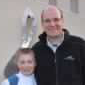

Committee
| Name | Role | Current Photo | School Photo |
|---|---|---|---|
| Daryth Crawford | Chairman | ||
| Michael Eric Brown | Secretary | ||
| Mike Bath | Committee Member |  | |
| Terence Bridgett | Committee Member | ||
| Johan Cloete | Committee Member | ||
| Lucas Enslin | Committee Member |  |
|
| Jo Nieman | Committee Member | ||
| Charles Puttergill | Committee Member |  |
|
| Herman Swanepoel | Committee Member | ||
| Werner van der Westhuizen | Committee Member | ||
| Charl Yazbek | Committee Member | ||
| Daniel Nambassi | Branch Co-ordinator | ||
| Van Wyk Oosthuysen | Branch Co-ordinator | ||
| Yolani Bam | Music Liaison |